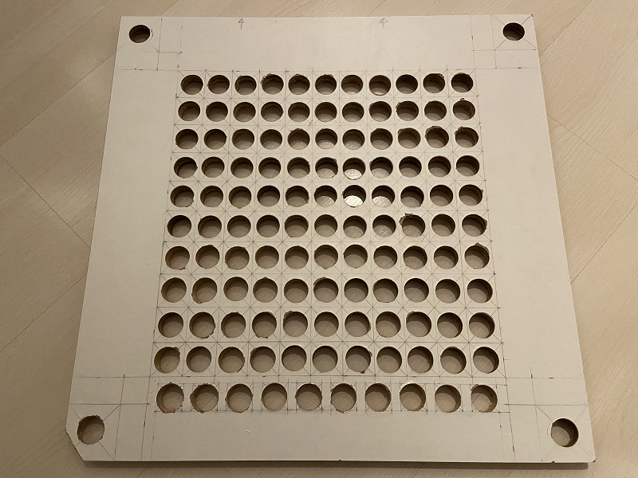

Handbook¶
This handbook provides you information about all the necessary details and steps to build the Word Clock DE by yourself, starting from collecting the required items to build the hardware, build the hardware itself and use the software to operate the clock.
To build this word clock you do not need as much money as the price from the real provider, all you need is maybe a few bucks and your passion. And last but not least, make sure you enjoy the process and have fun with it.
Requirements¶
Hardware¶
This project requires a lot of materials, but you don't need to buy all of it in a new condition. If you want to save some money, maybe you can ask your friends, if they have some materials, that you can use to build this project, for example a unused board.
Some equipments / materials are optional to buy, if you already have them, for example soldering iron.
So here is the list of necessary materials:
500 x 500 x 16 mmparticle board500 x 500 x 3 mmboard (the material can be seen from the back cover of one of the IKEA's cupboard)500 x 500 x 3 mmacryl glass500 x 500 x 45 mmIKEA Ribba picture frame- Raspberry Pi Zero W
- RGB LED Stripes -
WS2812B - Realtime clock -
DS1302 - Brightness sensor -
BH170 - Motion detection sensor -
RCWL-0516 - Electronic cables
- Power supply
- Power supply adapter
- Breadboard
To build the project to need following equipments:
- Soldering iron
- Soldering pump - Everyone makes mistakes ;)
- Wire stripper
- Carving knife
- Cutting mat
- Drill machine
Software¶
All the software and drivers are written in Python programming language.
Hardware Build Up¶
To build the word clock we can refer to the technical drawing, that is created using Inkscape
{kind=link}
1. Drill the holes on the particle board accordingly¶
